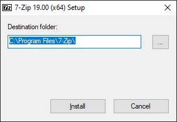
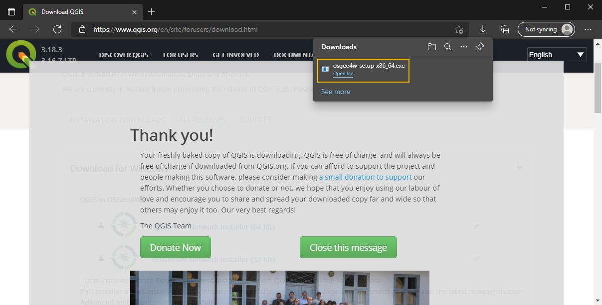
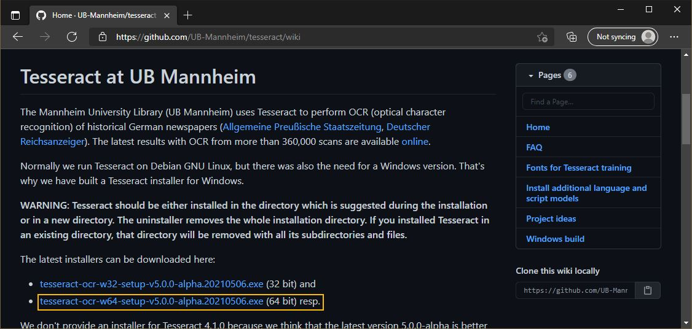
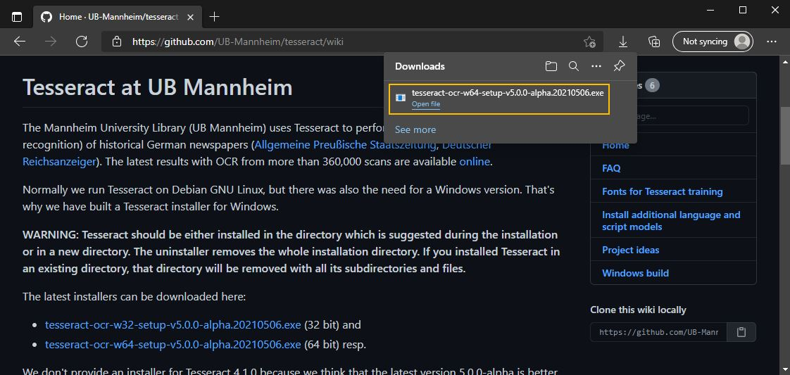
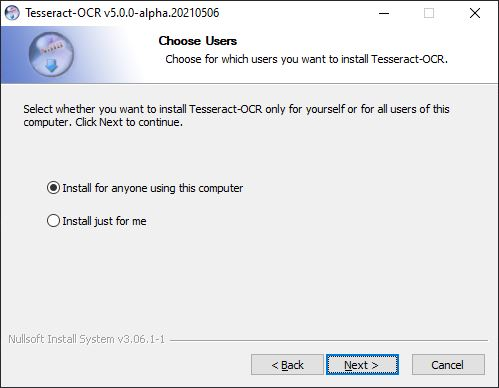
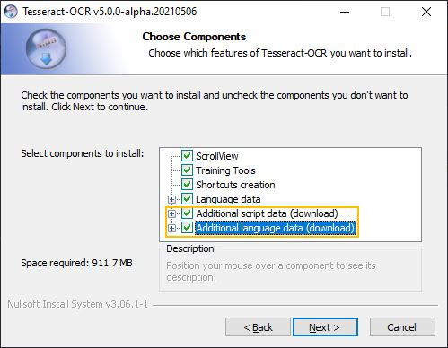
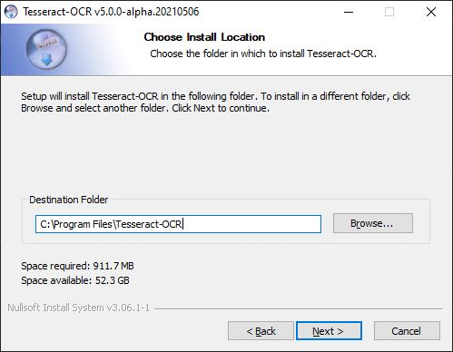

5 Other Data Tools
5.1 7zip
5.1.1 Introduction
7-zip is a free, open source, and cross-platform compression program. It can compress and unpack several formats with varying security and compression levels.
5.1.2 7-zip on Windows
First navigate to the 7-zip download page and download the file for your version of windows (most likely 64bit).

Once it is done downloading, start the installer from your browser or downloads folder.

7-zip will ask where you would like to install it, the default is fine. Press the Install button to continue.

5.1.3 Verifying your install
To verify your instaliation, run “7-zip File Manager” from your start menu. If it opens, you’re all set! You can also now call 7-zip from the right-click context menu (may require restart).

5.1.4 Installation troubleshooting
If you are not able to successfully install OpenRefine on your own, please attend DataLab’s Virtual Office Hours. Click here for more information and to receive a Zoom link.
5.2 OpenRefine
5.2.1 Introduction
OpenRefine is an open source tool used to clean and pre-process messy data. While most people are familiar with data cleaning in their coding tool of choice (R, Python, Julia, etc.), OpenRefine is designed to provide powerful cleaning capabilities with minimal overhead. One of the most helpful capabilities of OpenRefine is the ability to check for possible duplicates and misspellings of text data using it’s text facet tools.
5.2.2 OpenRefine on Windows
Open your web browser of choice and navigate to the OpenRefine homepage at https://openrefine.org/. Click on the download button in the left sidebar.

On the download page, scroll to the latest version of OpenRefine and select the Windows kit. If you are unsure if you have Java installed on your system, choose the Windows kit with embedded Java instead.

Once the download has completed, open the zip and move the contents to a convenient location on your computer.

Open the resulting directory, and double click on the openrefine.exe executable.

The OpenRefine executable will start a terminal window, and shortly after launch a tab in your default web browser with the OpenRefine interface.

5.2.3 OpenRefine on Mac
If you are installing OpenRefine on a Mac, there is no extra configuration. Simply go the download page for OpenRefine and choose the latest version for mac. Run the installer package when it is finished downloading. If you receive an error regarding the app being from an unidentified developer, please follow the instructions here.
5.2.4 Verifying your install
To verify everything is working, first start Openrefine. It will open a page in your browser of choice that resembles the following.

Click the Choose Files button, and enter this dataset (you can just put in the URL). Click Next.

Openrefine will load in the data and present you with a preview. The defaults should be fine. Click Create Project in the upper right hand corner.

You will then be presented with the Openrefine working area. Click the arrow next to the What sector ... column and select Facet -> Text facet.

In the left hand menu, click the Cluster button.

In the following menu, for method select nearest neighbor. Openrefine will look through that column for any strings that are similar, and show you. This can be helpful for finding typos. Here, we see there are two misspellings of “Academia”. Click the Check-box in the Merge? column, then select Merge Selected & Close. Openrefine will change all strings in the Values in Cluster column to match the New Cell Value. If that all worked, Openrefine is working!

5.2.5 Installation troubleshooting
If you are not able to successfully install OpenRefine on your own, please attend DataLab’s Virtual Office Hours. Click here for more information and to receive a Zoom link.
5.3 Qgis
Qgis is a free and open source geospatial software suite. It can be used for geospatial analysis and cartography. It also features a rich development community, with python based addons that extend the core functionality.
5.3.1 Qgis on Windows
First visit the download page for Qgis and select the version for your machine. This will most likely be the 64-bit version.

Once the download has finished, launch the installer from your browser or downloads folder.

On the first page of the installer, select “Express Desktop Install” and press Next. When prompted what components you would like to install, keep the default. The installer may say you have unmet dependencies. If this is the case, install them as well and accept the license agreements. It will then start to download the required components.

Once the download is complete, it will start to install. If this is the first time you are installing Qgis, it will stop on the last page telling you it is finished. If you are updating an installation, it will close silently once it finishes.
5.3.2 Verifying your install
Launch Qgis from your programs menu. If the main page comes up, you should be good!

5.3.3 Installation troubleshooting
If you are not able to successfully install OpenRefine on your own, please attend DataLab’s Virtual Office Hours. Click here for more information and to receive a Zoom link.
5.4 Tesseract
5.4.1 Introduction
Tesseract is Google’s open source tool for Optical Character Recognition (OCR). It is used to convert images of text into usable textual data. This is a very difficult task for computers, and will often result in some amount of errors. Nevertheless, significant progress has been made in recent years, and it is a very useful tool to have. Tesseract is often called by other programming languages such as R or Python to perform OCR tasks.
5.4.2 Tesseract on Windows
Tesseract is natively a linux tool, but community maintained ports exist for Windows. We will be using the binaries prepared by the Mannheim University Library (UB Mannheim) to install Tesseract today. First head to their github page and scroll down to “The latest installers can be downloaded here.” Download the version that matches your machine (most likely 64 bit).

Once the download has finished, launch the installer from your browser or downloads folder.

Once the installer has started, select your language and continue to the second page by pressing Next >. Accept the license agreement by pressing I Agree. On the following page, select if you would like to install Tesseract for everyone on the computer, or just yourself.

On the following page you will choose what languages you want to be able to run OCR on. If you plan to run OCR on anything other than American English, you must select them here. “Additional script data” works for handwriting, and “Additional language data” works for printed material. I recommend you just install everything unless space is an issue. It will increase the install size from ~300mb to ~900mb.

On the next page, select where you will be installing Tesseract. You should leave it as the default unless you have a very good reason not to and know how to re-assign path variables on your machine.

Continue on until the installer finishes.
5.4.3 Verifying your install
To verify Tesseract was installed correctly, open your Windows menu and launch Windows PowerShell.

In the resulting window, copy the following command and press enter: & "C:\Program Files\Tesseract-OCR\tesseract.exe" --help-extra. If you see the help message, you are all set!

5.4.4 Installation troubleshooting
If you are not able to successfully install OpenRefine on your own, please attend DataLab’s Virtual Office Hours. Click here for more information and to receive a Zoom link.